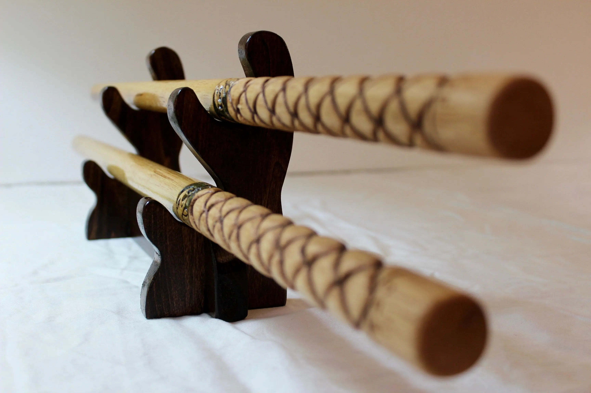
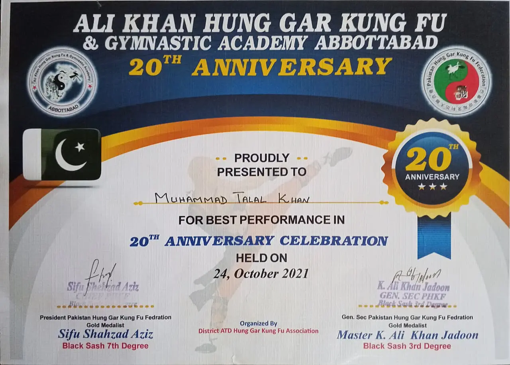
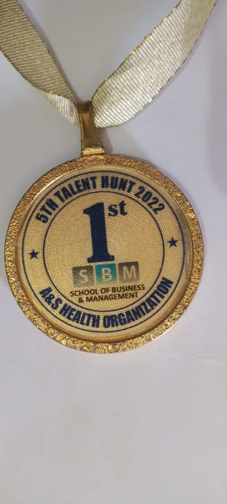
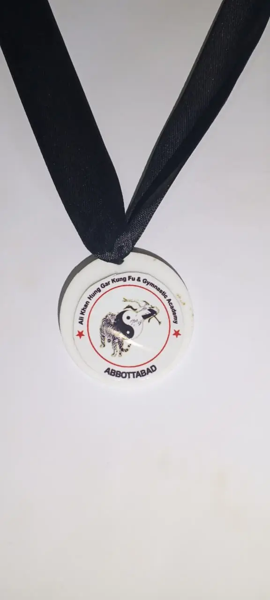
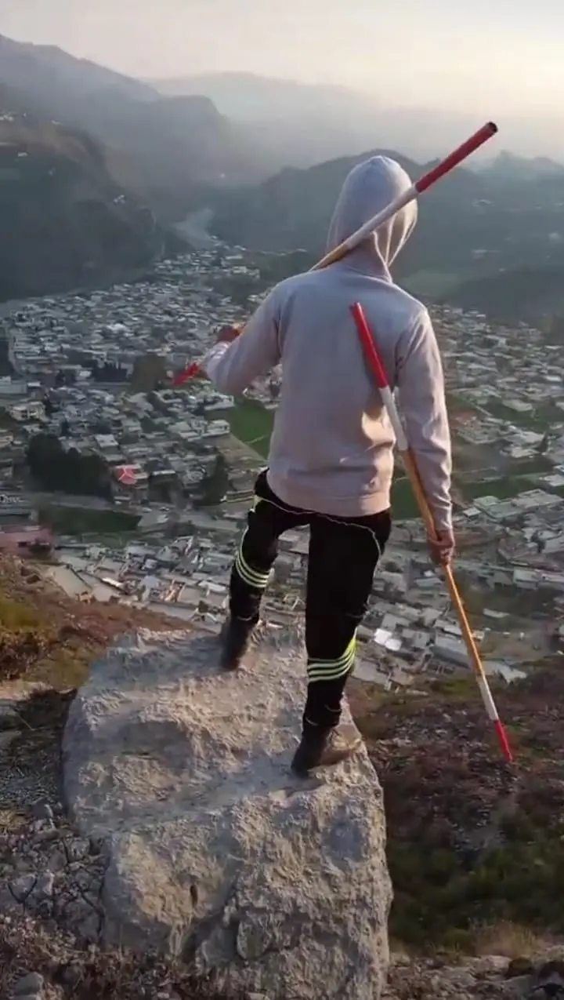
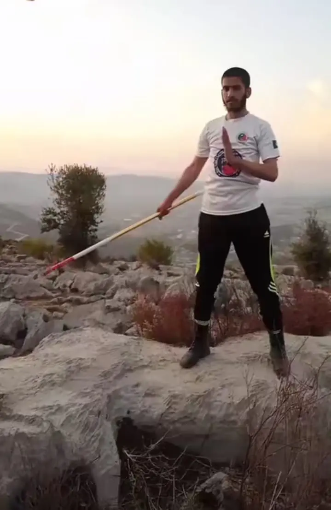

The Way of the Staff:
Discipline & Flow
My path into Chinese martial arts didn't actually start in a traditional dojo; it began through a digital window. I remember being completely captivated by the fluid, high-speed freestyle stick movements of a European Artist on TikTok.
Her mastery over the staff was hypnotic. It was this perfect, rare blend of raw strength and aesthetic flow that I just had to understand. Driven by a genuine curiosity to replicate that precision, I started deconstructing her videos frame by frame. I would sit there, watching every single rotation in slow motion, trying to get the mechanics of the grip and the momentum of the strike just right. What started as simple imitation quickly turned into a dedicated daily practice, allowing me to transition from just being a distant observer to truly becoming a student of the art.

Certificate of Excellence // Technical Mastery
What began as a personal challenge to master a few freestyle moves eventually evolved into a competitive pursuit. This journey of constant repetition and technical refinement led me to the arena of formal competition. Testing my skills under pressure taught me that martial arts is as much about mental composure as it is about physical agility. Achieving recognition at the competition level was not just about the medals, but about the thousands of unseen hours spent perfecting a single rotation.


Competitive Milestones
Randomly captured moments from my daily practice.

